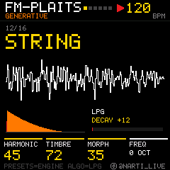
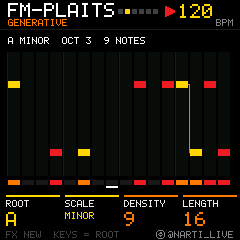
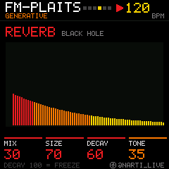
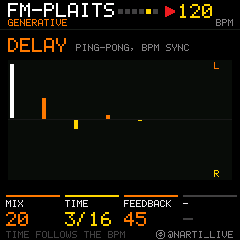
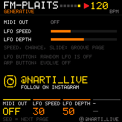

FM-PLAITS
Generative Plaits voice for the M-VAVE FM-1
BY @NARTI_LIVESixteen synthesis engines in the spirit of Mutable Instruments Plaits, a low pass gate, a black hole reverb, a ping-pong delay and a generative melody sequencer taken from Narti Live's Max for Live device. Press PLAY and it starts writing melodies. Turn a knob and it follows you.





Listen
The voice
- Engines. PRESETS picks one of sixteen. HARMONICS, TIMBRE and MORPH shape it, FREQ moves it by octaves.
VAWaveshapeFMGrainAdditiveWavetableChordsVowelSwarmNoiseParticlesStringModalPhase distTerrainChiptune
- Low pass gate. ALGORITHM is the gate: centre plucks, clockwise rings longer, counter-clockwise swells in slowly.
- Generator. Root, scale, density and length. FX writes a new melody, keys change the root, and EVOLVE mutates it every few bars.
- Groove. Speed from /16 to X1, triplets, a chance knob for how many notes actually play, and slides.
- Space. An eight-line black hole reverb with FREEZE at full decay, and a ping-pong delay locked to the tempo.
- Drift. A random LFO wanders over the sound. Its slowest setting takes about a minute and a half.
- MIDI out. The melody goes out on channel 1, with accents as velocity, plus MIDI clock.
Knobs
| PRESETS | Sound engine |
|---|---|
| ALGORITHM | Low pass gate: decay (clockwise) or slow attack (counter-clockwise) |
| SELECT | Tempo |
| K1 – K4 | The four values at the bottom of the page |
| SEQ | Next page: Sound, Seq, Groove, Reverb, Delay, Menu |
| HOME | Back to Sound |
| GLO (hold) | Mixer |
| SAVE | Save the project |
Install
Back up your projects, DX7 voices and samples in the M-VAVE workbench first. Then open the installer in Chrome or Edge, connect the FM-1 with a USB data cable straight into the computer, and run the update. Keep the cable in until it says it is done.
To go back, the same installer page puts the original M-VAVE V15 firmware back on.
Experimental first release. JieLi now only offers a newer compiler than the one M-VAVE used, and with it the original firmware nearly fills the FM-1. To make room, this build leaves out the original editor pages (DX7 FM editor, step and arp editors, preset browser) and the 128 DX7 factory voices. FM-PLAITS, the mixer, project saving, MIDI and Bluetooth are all there.